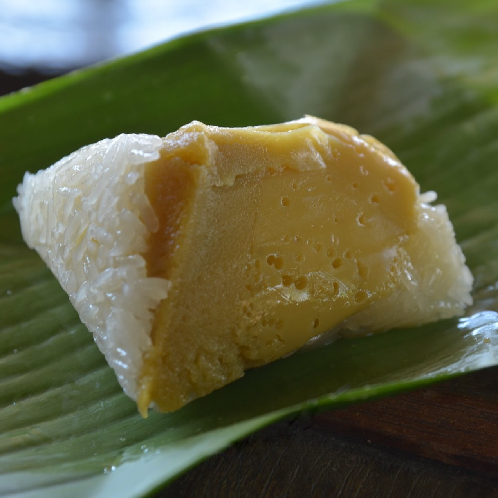

สังขยา

ส่วนผสม
⋆ ไข่เป็ด 4 ฟอง
⋆ ไข่ไก่ 1 ฟอง
⋆ น้ำเปล่า 3 ช้อนโต๊ะ
⋆ หัวกะทิ 250 มิลลิลิตร
⋆ น้ำตาลโตนด 100 กรัม
⋆ ใบเตยหอม 2-3 ใบ
วิธีทำ
1) นำไข่เป็ดและไข่ไก่ ใส่อ่างผสม รวมกับน้ำตาลมะพร้าว น้ำเปล่า หัวกะทิ และใบเตย
2) ใช้มือขยำส่วนผสมให้เข้ากันดี และน้ำตาลละลายดี
3) นำส่วนผสมมากรองเพื่อเอาใบเตยออก
4) ตั้งซึ้งให้น้ำเดือด จากนั้นปรับลงไฟลงให้เหลือกลางค่อนอ่อน
แล้วนำสังขยาลงไปนึ่งจนสุก
5) นำสังขยาลงมาพักให้เย็น พร้อมทาน